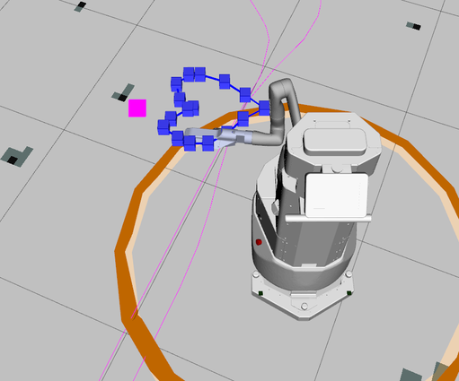
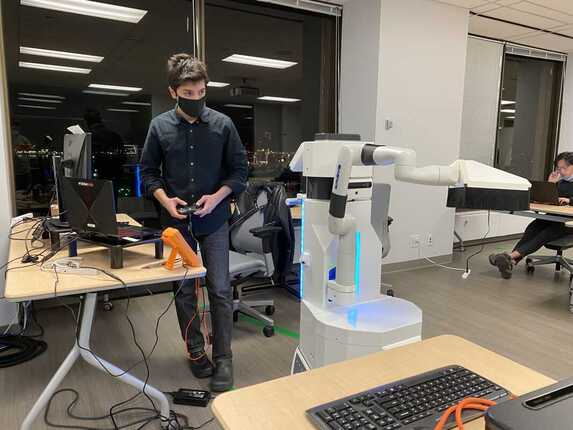

WORK PROJECT / ROBOTICS & AUTONOMY
Robotic surface disinfection
Arm-control software for a mobile UV disinfection system developed during the pandemic.
Project context
The project combined an autonomously guided platform with a robotic arm for surface disinfection. My work focused on the arm software and its positioning relative to target surfaces.
My contributions
- Developed software for controlling the robotic arm on the mobile platform.
- Adjusted the end-effector pose automatically relative to surfaces.
- Designed a common interface for arm commands and feedback.
- Supported simulated and physical arms through interchangeable implementations.


